A fitted linear model with more than one predictor lives in more
dimensions than a scatterplot can show. The usual workaround,
geom_smooth(method = "lm"), quietly fits a
different, simpler model to the plotted variables, so the line
on the screen is not the model you summarized.
Applr draws the model you actually fit. Its core idea is the
slice: hold every predictor except one at a fixed
value, and draw the model’s predictions as that one predictor varies.
Start by fitting an lm(), then hand it to Applr. Explore it
with autoplot(), or present it with polish and fine-grained
control using geom_slice().
Explore with autoplot()
autoplot() on an lm builds the whole plot
in one call: the model’s own data as a scatter, a fitted slice line with
its confidence ribbon, and a subtitle saying what the model is. It also
prints summary() to the console, so you can refit, re-plot,
and read the coefficients and R² in one step (turn this off with
summary = FALSE).
autoplot(lm(Petal.Length ~ Sepal.Length + I(Sepal.Length^2):Species, iris))
#>
#> Call:
#> lm(formula = Petal.Length ~ Sepal.Length + I(Sepal.Length^2):Species,
#> data = iris)
#>
#> Residuals:
#> Min 1Q Median 3Q Max
#> -0.72665 -0.15039 0.00562 0.16639 0.76639
#>
#> Coefficients:
#> Estimate Std. Error t value Pr(>|t|)
#> (Intercept) -3.79412 1.09932 -3.451 0.000731 ***
#> Sepal.Length 2.04477 0.36389 5.619 9.51e-08 ***
#> I(Sepal.Length^2):Speciessetosa -0.19763 0.02958 -6.680 4.75e-10 ***
#> I(Sepal.Length^2):Speciesversicolor -0.11503 0.03033 -3.793 0.000218 ***
#> I(Sepal.Length^2):Speciesvirginica -0.09427 0.02987 -3.156 0.001944 **
#> ---
#> Signif. codes: 0 '***' 0.001 '**' 0.01 '*' 0.05 '.' 0.1 ' ' 1
#>
#> Residual standard error: 0.262 on 145 degrees of freedom
#> Multiple R-squared: 0.9786, Adjusted R-squared: 0.978
#> F-statistic: 1655 on 4 and 145 DF, p-value: < 2.2e-16
#> Coloured the plot by `Species` - one slice line per level.
#> To choose the colour, use 'mapping = aes(color = ...)'.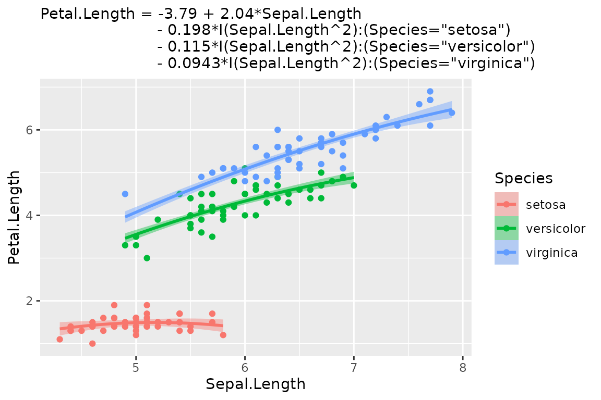
autoplot() makes a few decisions for you. The model’s
first numeric predictor goes on the x-axis, and predictors that group
into a few discrete values become color, then facets. Every
decision can be overridden. Pass a mapping to change the
defaults, just as you would with ggplot(); whatever you
leave out is still inferred. Choose a different x-axis with
aes(x = ...). Arguments in ... pass through to
geom_slice(), so interval = "prediction" gives
the wider ribbon and interval = "none" a bare line.
model <- lm(hwy ~ displ + drv + cyl, data = mpg)
autoplot(model, aes(color = factor(cyl))) + facet_wrap(~drv)
#> Faceted the plot by `drv` - one panel per level.
#> For a single panel, drop `drv` from the model.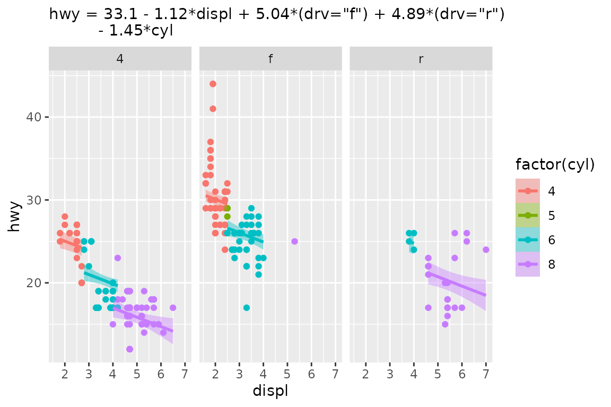
autoplot(model,
aes(x = cyl, color = factor(drv)),
interval = "none") +
labs(title = "The Same Model From a Different Angle")
#> Value for `displ` not specified - Used mean: 3.472
#> To choose a slice, use 'predict_vars = list(displ = 3.472)'.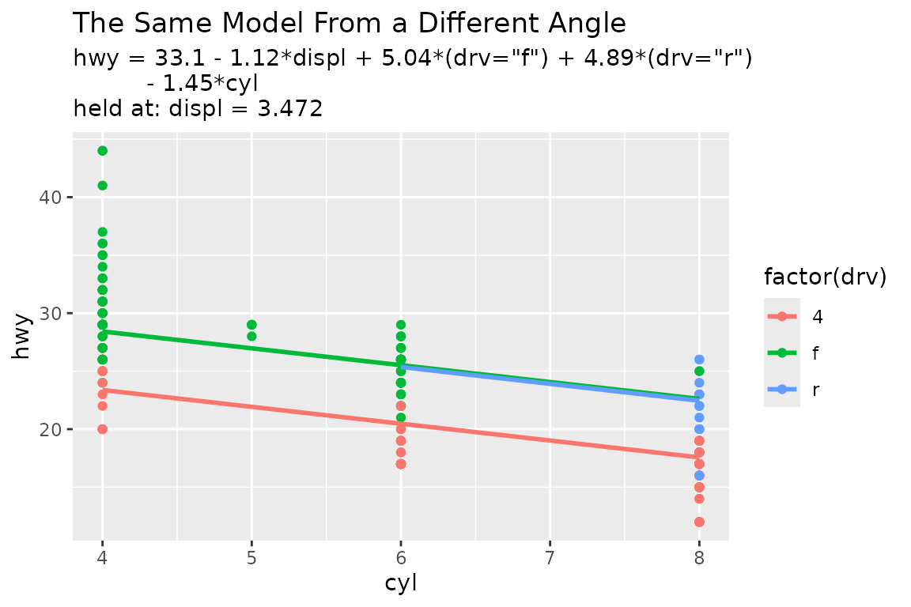
The result is an ordinary ggplot, so + works as
usual.
Present with geom_slice()
geom_slice() is the layer underneath
autoplot(). It looks like geom_smooth(), but
where geom_smooth() fits its own model to the plotted data,
geom_slice() draws the model you fitted, reading
the plot’s aes() to learn which predictor is on the x-axis.
Unlike autoplot(), it makes as few decisions as it can.
Once a model has more than one predictor, each line is a 2-D slice
through it. Every predictor not on the x-axis has to be held at some
value, and geom_slice() fills those values in this
order:
- Variables named in
predict_varsare held at your chosen values. - Variables mapped to a grouping aesthetic
(
aes(color = g)) are held at each group’s value, giving one line per group. - Facet variables are held at each panel’s value.
- Anything left over is imputed (mean for numeric, most common value for factors), with a console message naming the value used.
The model below has four predictors and was fitted exactly, with no
noise. A bare geom_slice() has to impute three of them, and
the console messages report each choice:
set.seed(123)
n <- 80
x <- runif(n, 0.1, 10)
x2 <- runif(n, 0.1, 10)
x3 <- sample(c(1, 20, 40), n, replace = TRUE)
x4 <- sample(c(1, 2), n, replace = TRUE)
y <- log(5 + x + x2 + x3 + 1/5 * x * x3 + 80 * x4) # no random noise
dat <- data.frame(x, x2, x3, x4, y)
model <- lm(exp(y) ~ x*x3 + x2 + x4, data = dat) # exact model fit
ggplot(dat, aes(x, y)) +
geom_point() +
geom_slice(model) +
labs(title = "A Perfectly Fit Model 'Slice'")
#> Value for `x3` not specified - Used mean: 19.36
#> To choose a slice, use 'predict_vars = list(x3 = 19.36)'.
#> Value for `x2` not specified - Used mean: 4.981
#> To choose a slice, use 'predict_vars = list(x2 = 4.981)'.
#> Value for `x4` not specified - Used mean: 1.412
#> To choose a slice, use 'predict_vars = list(x4 = 1.412)'.
#> Predictions of `exp(y)` were back-transformed to match the `y` axis.
#> To turn this off, use 'back_transform = FALSE'.
# The same model against its full linear predictor: an exact fit
ggplot(dat, aes(x = log(5 + x + x2 + x3 + 1/5 * x * x3 + 80 * x4), y)) +
geom_point() +
geom_slice(model) +
labs(title = "Same Model, Different X-Axis")
#> Predictions of `exp(y)` were back-transformed to match the `y` axis.
#> To turn this off, use 'back_transform = FALSE'.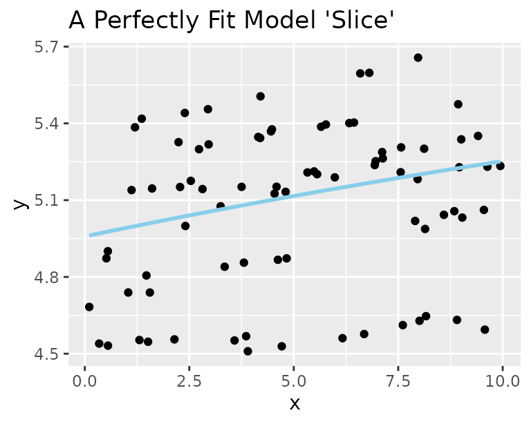
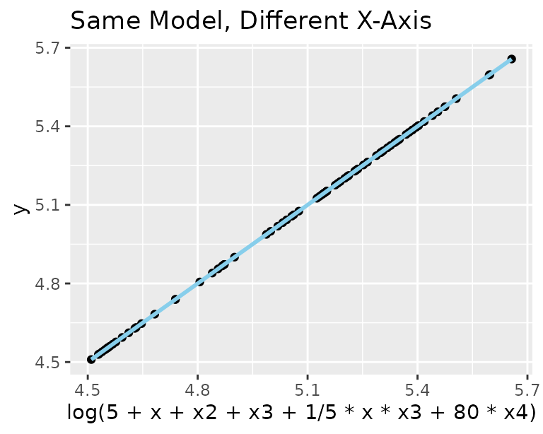
Notice that the response exp(y) was back-transformed
onto the plotted y axis without being asked. Those
imputations were forced, but you can do better. Map x3 to
color, facet by x4, and show the reach of x2
as a band, and every line lands on its points:
ggplot(dat, aes(x, y, color = factor(x3))) +
geom_point() +
geom_slice(model, band = "x2", predict_vars = list(x2 = c(0, 10))) +
facet_wrap(~x4) +
geom_slice_text() +
geom_slice_subtitle()
#> Predictions of `exp(y)` were back-transformed to match the `y` axis.
#> To turn this off, use 'back_transform = FALSE'.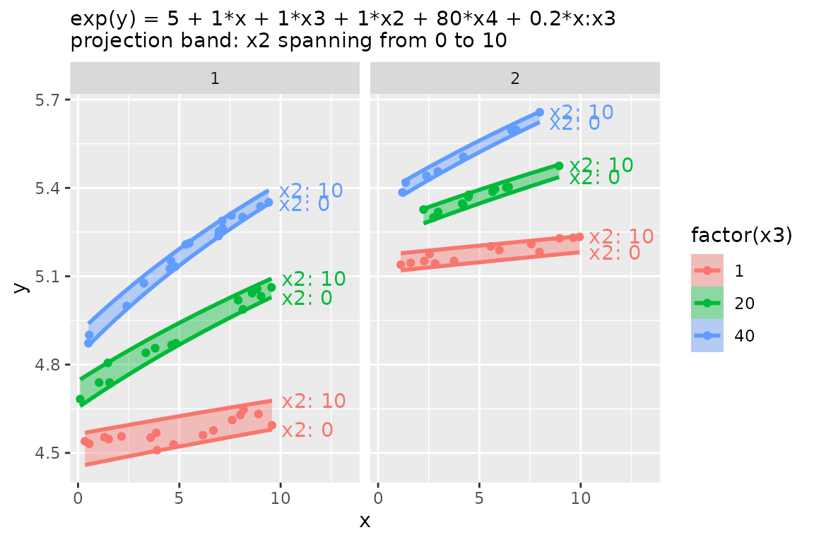
The rest of this vignette goes through those features one at a time.
Choosing slices with predict_vars
Give a variable several values in predict_vars to draw
one line per value. Several multi-value variables are crossed.
model <- lm(Sepal.Length ~ Sepal.Width + Petal.Length, iris)
ggplot(iris, aes(Petal.Length, Sepal.Length)) +
geom_point() +
geom_slice(
model,
predict_vars = list(Sepal.Width = c(2, 3, 4)),
interval = "confidence"
) +
geom_slice_text()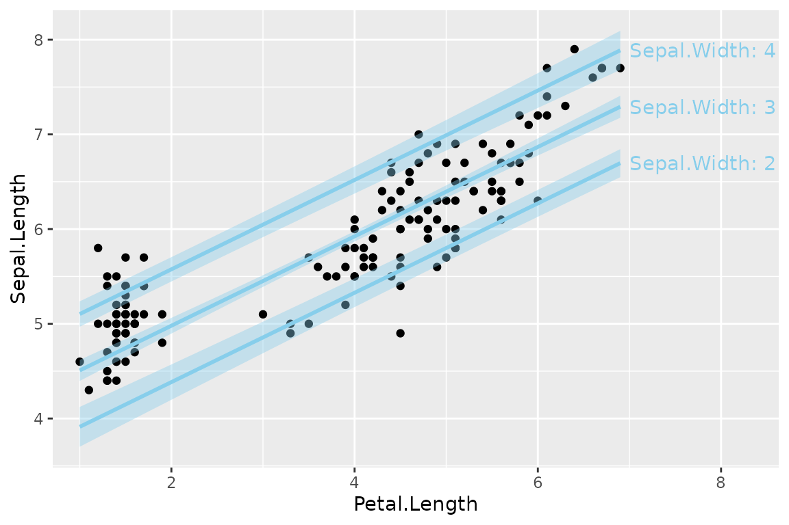
Confidence and prediction intervals
interval = "confidence" or "prediction"
shades the corresponding predict.lm() interval around each
line:
model <- lm(hwy ~ displ + I(displ^2), data = mpg)
ggplot(mpg, aes(displ, hwy)) +
geom_point() +
geom_slice(model, interval = "confidence") +
labs(title = "Confidence Interval")
ggplot(mpg, aes(displ, hwy)) +
geom_point() +
geom_slice(model, interval = "prediction") +
labs(title = "Prediction Interval")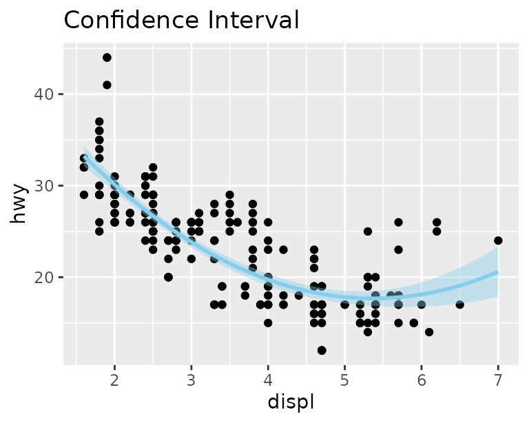
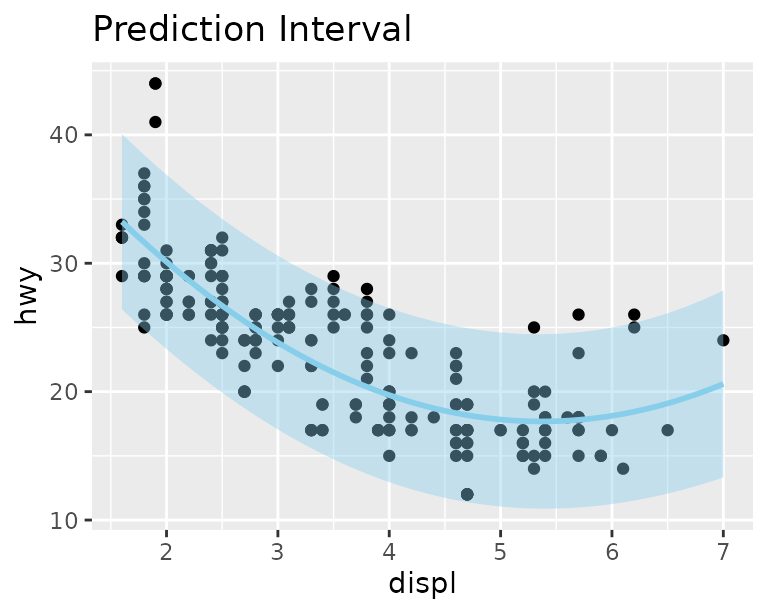
Projection bands
An interval shows uncertainty. A band shows the
reach of a predictor: two edge slices with a translucent ribbon
between them. band = "variable" spans that predictor
between the values given in predict_vars, or across its
observed range if predict_vars doesn’t mention it.
band = TRUE infers the variable when there is only one
sensible choice.
model <- lm(hwy ~ displ * drv + cyl, data = mpg)
# Inferred: cyl is the only predictor not shown, so it spans 4 to 8
ggplot(mpg, aes(displ, hwy, color = drv)) +
geom_point() +
geom_slice(model, band = TRUE) +
geom_slice_text()
#> Band range for `cyl` not specified - used the min/max data range: 4 to 8.
#> To choose the range, use 'predict_vars = list(cyl = c(4, 8))'.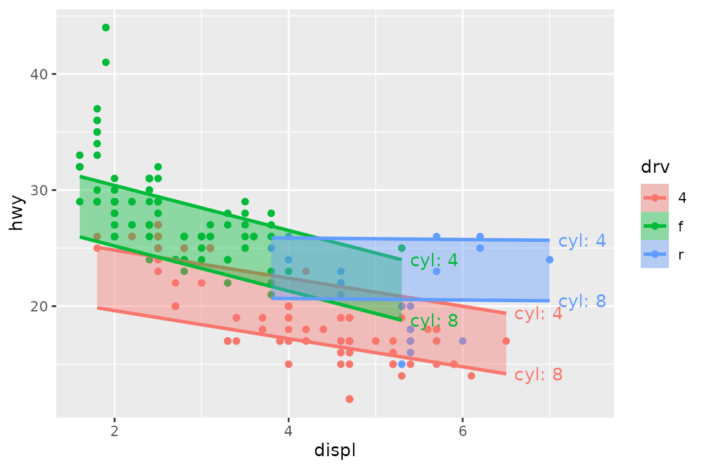
# Specified: cyl from 5 to 7
ggplot(mpg, aes(displ, hwy, color = drv)) +
geom_point() +
geom_slice(model, band = "cyl", predict_vars = list(cyl = c(5, 7))) +
geom_slice_text()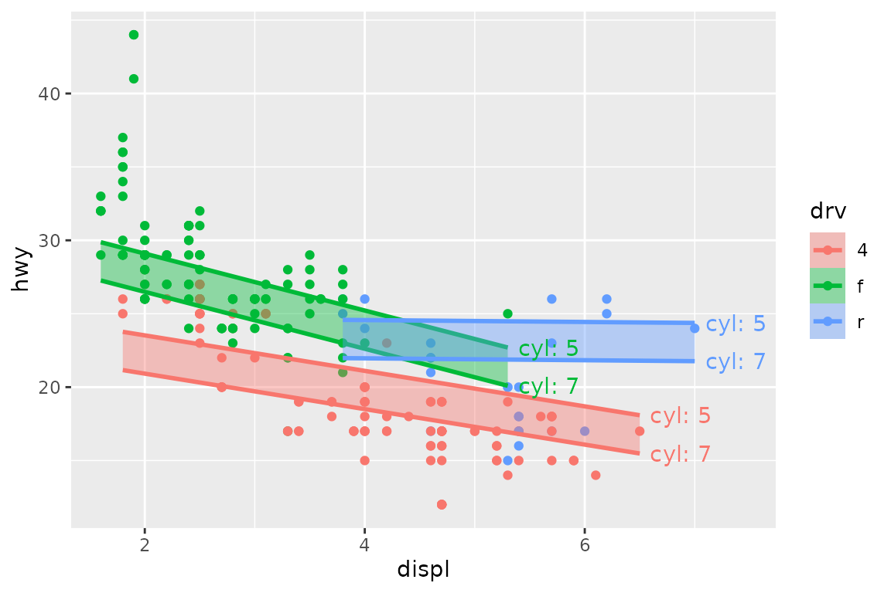
band cannot be combined with interval.
Transformed responses
If the model’s response is transformed but the plot shows something
else, predictions are back-transformed to match the y-axis, and a
console message says so. Turn this off with
back_transform = FALSE, or pass a function or name
(exp, "log10", …) to override the
auto-detection.
model <- lm(log(mpg) ~ disp + hp, data = mtcars)
ggplot(mtcars, aes(disp, mpg)) +
geom_point() +
geom_slice(model) +
labs(title = "normal y axis")
#> Value for `hp` not specified - Used mean: 146.7
#> To choose a slice, use 'predict_vars = list(hp = 146.7)'.
#> Predictions of `log(mpg)` were back-transformed to match the `mpg` axis.
#> To turn this off, use 'back_transform = FALSE'.
ggplot(mtcars, aes(disp, log(mpg))) +
geom_point() +
geom_slice(model) +
labs(title = "log() y axis")
#> Value for `hp` not specified - Used mean: 146.7
#> To choose a slice, use 'predict_vars = list(hp = 146.7)'.
ggplot(mtcars, aes(disp, mpg)) +
geom_point() +
geom_slice(model) +
scale_y_log10() +
labs(title = "scale_y_log10() axis")
#> Value for `hp` not specified - Used mean: 146.7
#> To choose a slice, use 'predict_vars = list(hp = 146.7)'.
#> Predictions of `log(mpg)` were back-transformed to match the `mpg` axis.
#> To turn this off, use 'back_transform = FALSE'.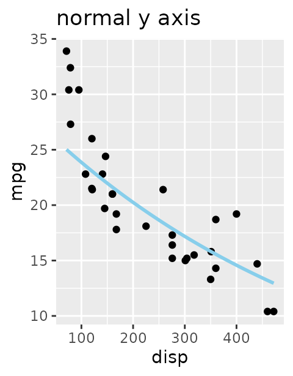
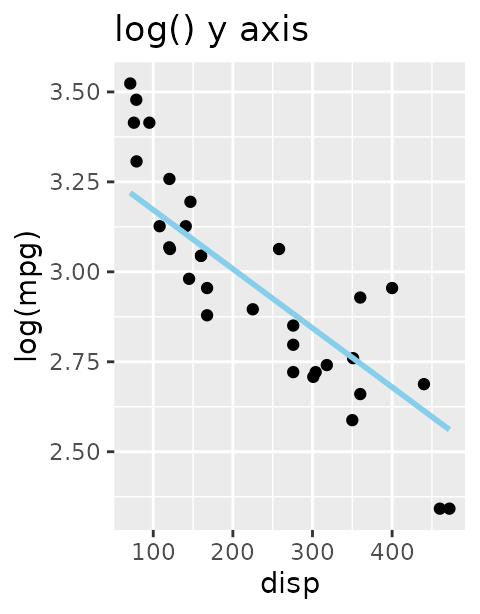
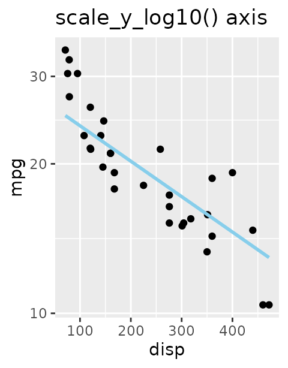
Grouping: one line per group
With a grouping aesthetic, each group gets its own slice, and each
line stops at the end of its group’s data.
full_range = TRUE extends every line across the whole panel
instead, like fullrange in geom_smooth():
model <- lm(hwy ~ displ + I(displ^2) + displ:drv, data = mpg)
ggplot(mpg, aes(displ, hwy, color = drv)) +
geom_point() +
geom_slice(model)
ggplot(mpg, aes(displ, hwy, color = drv)) +
geom_point() +
geom_slice(model, full_range = TRUE)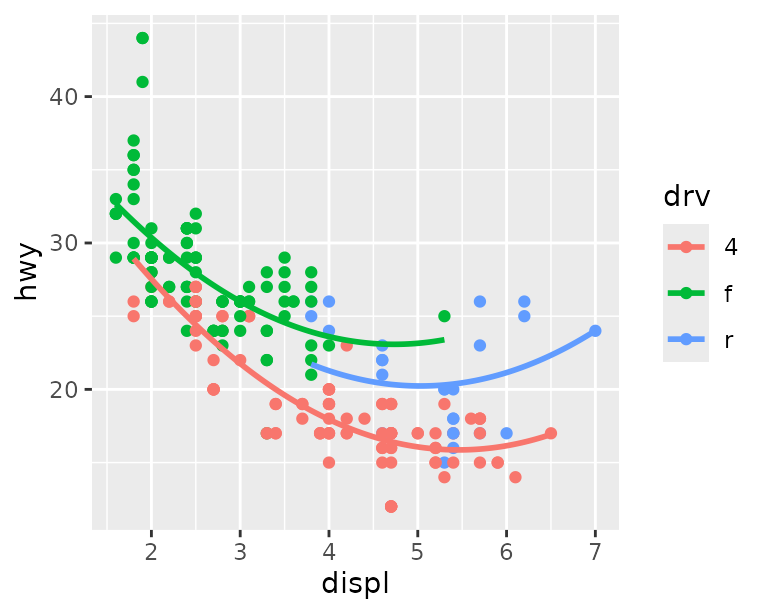
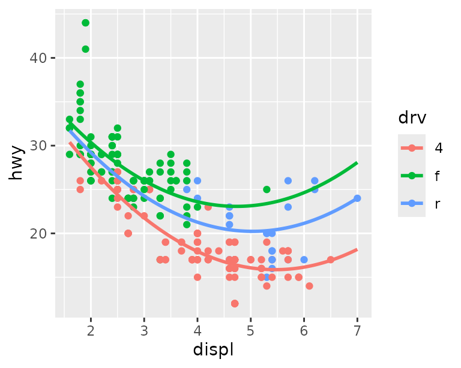
Labeling the slices
Three companion layers describe the slices on the plot itself, so a
reader can tell which line is which and what was held constant. They
take no model; they read everything from the plot’s
geom_slice() layers, so add them after those
layers.
geom_slice_text() labels the end of each line with the
values that define it. It is most useful with bands and multi-value
predict_vars:
set.seed(123)
n <- 80
x <- runif(n, -10, 10)
x2 <- runif(n, 0, 4)
g <- factor(sample(c("A", "B"), n, replace = TRUE))
y <- x * ifelse(g == "A", 0.5, 2) + ifelse(g == "A", 5, -5) + 4 * x2 + rnorm(n)
dat <- data.frame(x, x2, g, y)
model <- lm(y ~ x * g + x2, data = dat)
ggplot(dat, aes(x, y)) +
geom_point(alpha = 0.5) +
geom_slice(model, predict_vars = list(x2 = c(0, 2, 4), g = c("A", "B"))) +
geom_slice_text(style = "legend")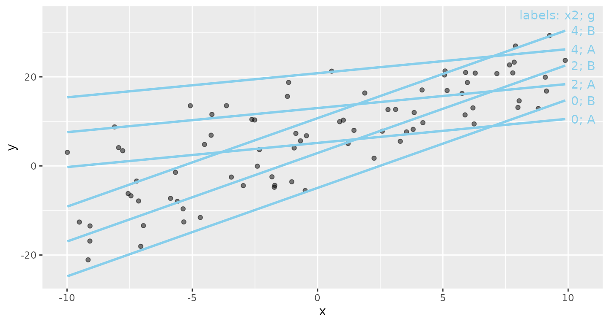
geom_slice_subtitle() (or
geom_slice_caption()) writes the model equation and any
held values that aren’t already shown by the legend, facets, or
geom_slice_text(). It indents the equation when there’s
room and compresses it when space is tight.
model <- lm(Petal.Length ~ Sepal.Length + I(Sepal.Length^2):Species + Sepal.Width, iris)
ggplot(iris, aes(Sepal.Length, Petal.Length, color = Species)) +
geom_point() +
geom_slice(model, interval = "confidence") +
geom_slice_subtitle()
#> Value for `Sepal.Width` not specified - Used mean: 3.057
#> To choose a slice, use 'predict_vars = list(Sepal.Width = 3.057)'.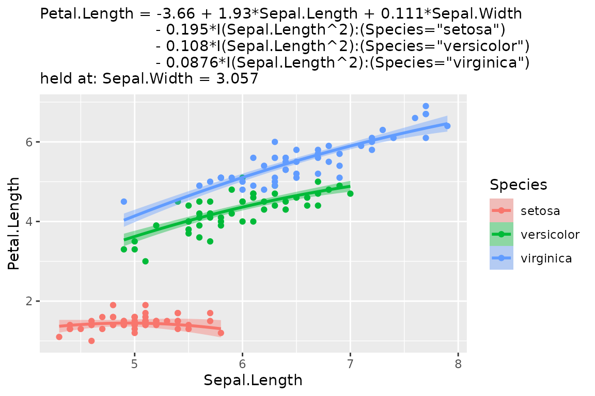
Where to go next
-
?geom_slicedocuments every option, includingn, the number of points that make up each line. -
?geom_slice_textand?geom_slice_subtitlecover label styles, placement, andprepend/appendtext. -
?slice_2dand?add_slice_2ddraw the same slices in base graphics. -
?scatter_3d(orautoplot(model, type = "3d")) shows a model with two numeric predictors as an interactive 3-D surface. -
?lm_equationand?lm_latexturn the fitted model into text or LaTeX for reports, and?diagnosedraws the standard residual plots.